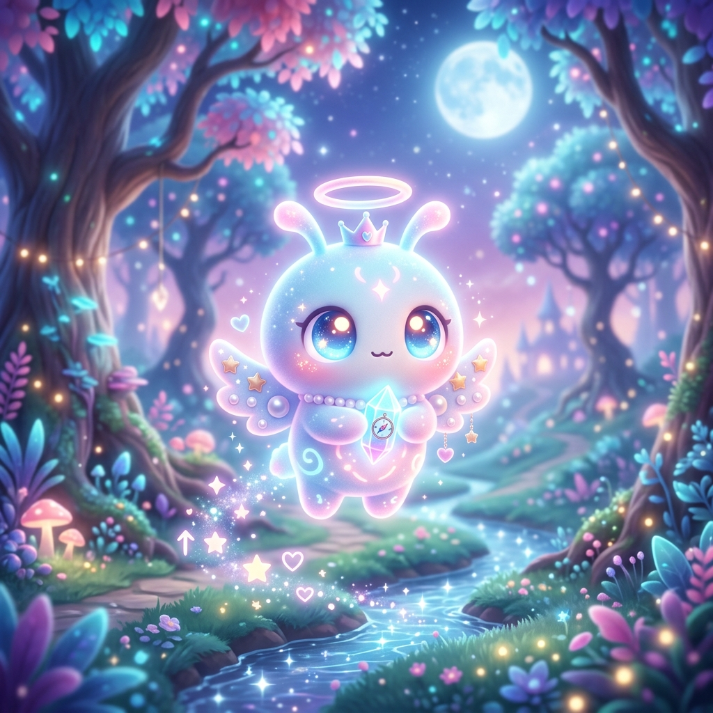
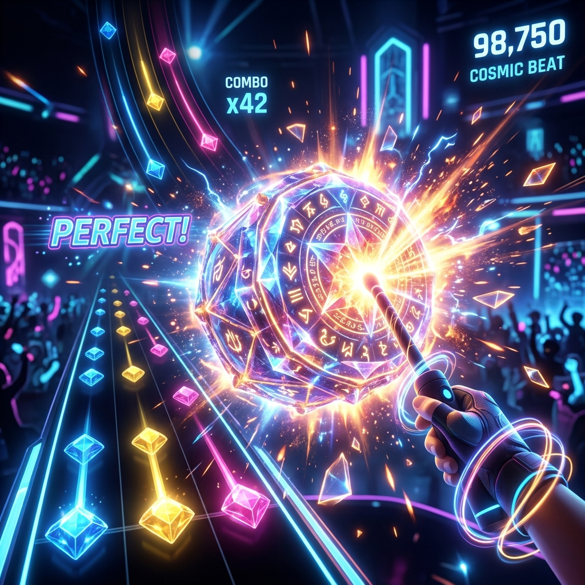
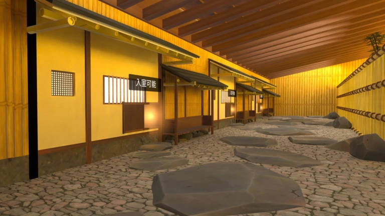
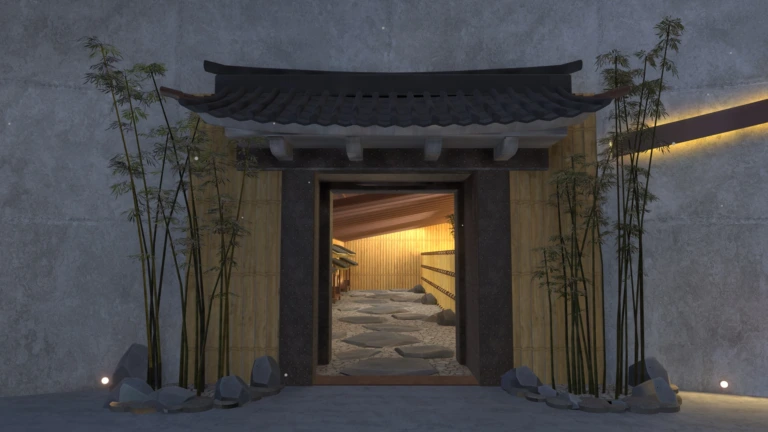
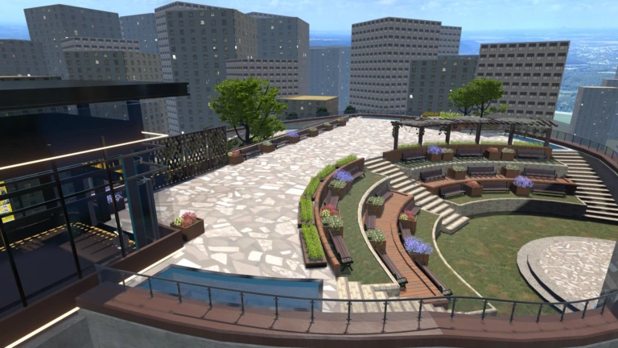
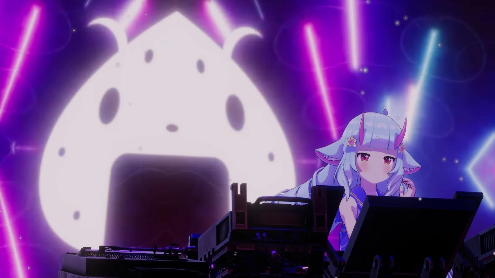
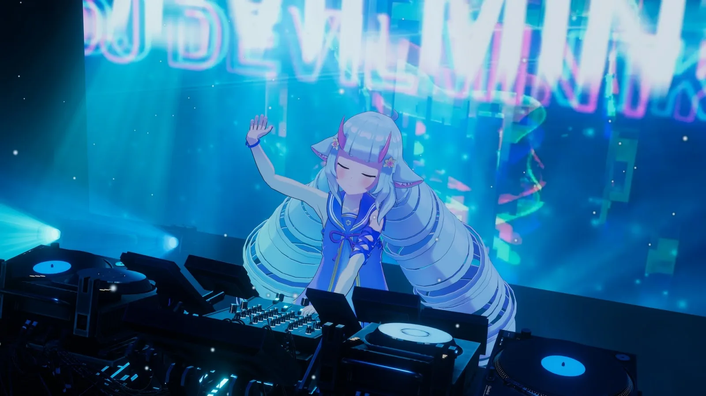
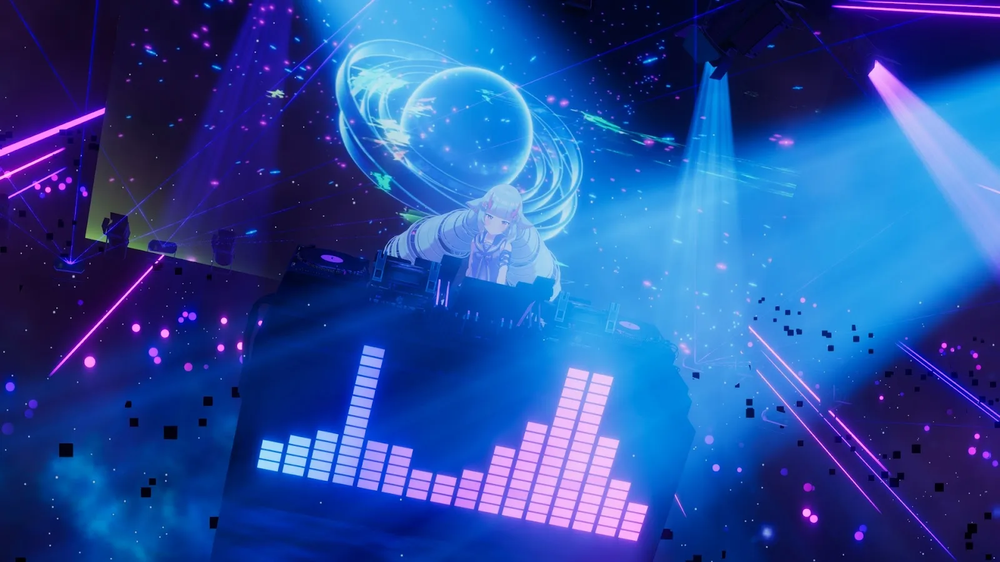
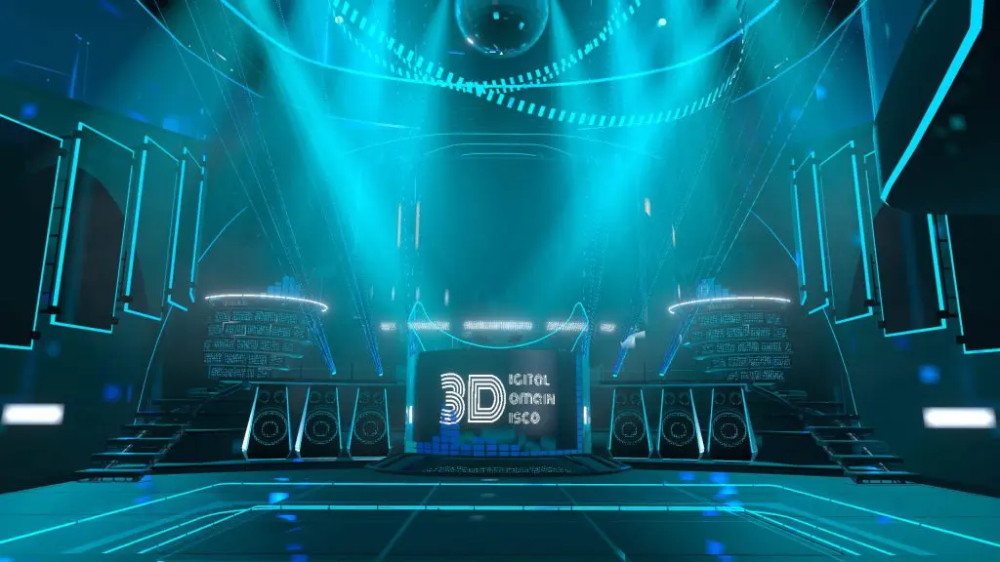

光と音で、
感情が動く瞬間を
デザインする


Featured Works

制作期間：役3か月(2024.09 - 2024.12)
Sanrio Virtual World Award 2024受賞作品
音楽ゲーム × タワーディフェンスを融合した
協力型リズムアクション
企画概要

Sanrio Virtual World Award 2024
サンリオのVRイベント「Sanrio Virtual Festival 2025」に向けたコンテンツ公募企画。
盤面に楽器を演奏するキャラクターを配置し、幽霊から森を守るタワーディフェンスゲームの企画書とデモゲームを提出し受賞
その後、株式会社サンリオから開発費、キャラクター3Dモデル、ボイス収録の支援を受けて制作しました。
チームメンバー
【私の担当】
- 企画
- ゲーム設計
- 実装
- シェーダー
- サウンド制作
（コアシステムを担当）
【メンバー】
-
 企画補助 / 脚本
企画補助 / 脚本
-
 アニメーション担当
アニメーション担当
-
 進行管理 / 企画補助
進行管理 / 企画補助
ゲームシステム・演出設計
音楽との同期設計
- 敵のスポーンタイミング
- プレイヤーの攻撃判定処理
- 盤面上キャラクターの演奏アニメーション
- 効果音（SE）の発音タイミング
- パーティクル等のエフェクト再生
ゲーム内で発生するすべてのイベントを「小節・拍単位」で管理。
すべての挙動をリズムに同期させることで、操作・演出・音が一体となった体験を実現しました。
フィードバック設計
プレイヤーのアクションに対する「気持ちよさ」を最大化するため、ステージや対象ごとに個別の演出を設計しています。
バリエーション
全4ステージ × 3種
専用コンポーネント
SE & Particle
各クリスタルを叩いた際、ステージの雰囲気に合わせた最適な視覚・聴覚フィードバックを実装。
技術的アプローチ
【課題】VRChatの制約
・パーティクル頂点をC#から制御不可
・処理負荷に対する厳格な制約
→ 軽量かつ制御可能な演出手法が必要
【方針】手法の使い分け
- Node-based (Amplify Shader): 軽量な処理、Vertex/Fragシェーダーで完結する表現
- HLSL (Geometry Shader): 点群表現や動的な粒子生成など、高度な制御が必要な処理
【実装】演出制御処理フロー
プレイヤー入力・リズム判定
UdonSharp (C#) でイベント処理
Shaderへパラメータ送信 (GPU)
光粒子の色・動き・発光をリアルタイム制御
【成果】
- 工数削減 (ノードベース活用)
- 柔軟な表現力 (HLSL併用)
- 軽量かつリアルタイムな演出制御を実現
企画の変更
【テスターからのフィードバック】
「あまり良いフィードバックが得られなかった」
何をすればいいかわからない
ストーリーが頭に入ってこない
ゲーム部分が面白くない
企画を大きく変更
【変更点】
① チュートリアル追加
森エリアに操作導線を設計し、「次に何をすべきか」を視覚的に誘導。

② ナビゲーションキャラ追加
世界観説明を補助するキャラクターを配置し、物語への没入感を向上。

③ ゲーム性の再設計
複雑なシステムを廃止し、「叩くと楽しい」体験に要素を集約。
成果
【実績】
- サンリオVfes2025にて一ヶ月間公開
- Vfes2026、VirtualPuroLand限定コンテツとして継続して公開
- 累計来場者数 約55,000人

【ローソク@VRC@rosoku_candle】


【メタバースイベント「Sanrio
Virtual Festival 2025」体験レポート 4Gamer.net
https://www.4gamer.net/games/794/G079439/20250214049/】
VirtualDiceParty
深海博物館ル・リエー
制作期間：約3ヶ月 (2025.07 - 2025.10)
VRChatの大型イベント「VirtualDiceParty」の展示会場として制作したワールド。
クトゥルフ神話の海底都市“ルルイエ”をモチーフに、約60の展示エリアを持つ大規模構成を実現。
60エリアを成立させるための設計
大規模構造 × 効率的モデリング
全体マップ or 構造図
同一モジュールの繰り返し図
軽量化・効率化の工夫
【課題】
60の展示エリアを持つ大規模空間において、
制作コストとパフォーマンスの両立が必要だった。
【解決アプローチ】
- 展示エリアを“モジュール化”し共通構造として設計
- 同一モデルの再利用による制作工数の大幅削減
- ライティング・配置の変化で印象差を演出
【結果】
- 短期間で大規模ワールドを構築
- VRChat上での動作負荷を抑制
- イベント用途として安定運用を実現
同じ構造が、徐々に“異質”へ変わる体験設計
反復構造 × 恐怖演出設計
同じ部屋の比較（初期→後半）
展示物の変化
照明・色の変化
設計意図
同一構造の繰り返しによる“安心感”をベースに、
徐々に違和感を増幅させることで恐怖体験へ転換。
演出手法
- 展示物を段階的に変化（正常 → 異形）
- 照明の色・明度を変化
- 空間の密度や配置を歪ませる
体験効果
- プレイヤーが“気づく恐怖”を誘発
- 探索の継続動機を維持
- 物語的な没入感を強化
探索からアトラクションへ
ライド体験 × Timeline制御
潜水艦ライドのカット
タイムラインのスクショ
演出の流れ図
クライマックス設計
最終エリアでは潜水艦ライドにより、
深海の沈没船を探索するアトラクションを実装。
技術実装
- Unity Timelineによる演出制御
- 移動、カメラ、エフェクト、音響を同期
- プレイヤー操作を排したシネマティック体験
演出意図
- 探索体験の“報酬”としての演出
- 世界観のピークを形成
- 印象に残るエンディングを設計
大手前大学
オープンキャンパス
制作期間：約2ヶ月 (2025.12 - 2026.01)
本ワールドは、大手前大学のオープンキャンパス向けに制作したVR空間です。
エレベーター、螺旋階段、屋上庭園、茶室など、
異なるテイストの空間を一つのワールドとして違和感なく接続することを目指しました。
複数の空間をつなぐ構成と導線設計
空間設計・演出
統合と導線
本ワールドでは、大きく雰囲気の異なる3つの空間を一つに統合しています。
これらを不自然さなく接続するため、エレベーターから始まる導線設計を採用しました。
建築再現とデザイン対応力
デザイン・モデリング
クライアントからの要望として、安藤忠雄風の建築表現が求められました。
特に螺旋階段では、コンクリートの質感や光の入り方にこだわり、シンプルながら印象的な空間を目指しています。
また、茶室エリアでは、大学内に実在する伝統的な茶室を参考に再現を行い、空間の説得力を高めました。
【制作フロー】
デザイン作成


モデリング進行


AIブラッシュアップ
(Gemini活用)


再モデリング調整
軽量化と表現を両立したライティング設計
多環境対応の中でも、印象的な光表現を実現
本ワールドはオープンキャンパス用途のため、VR・PC・Android・iOSなど幅広い環境での動作が前提となっています。
そのため、リアルタイムライトの多用は避けつつ、軽量化を維持しながらも印象的な光表現を実現する必要がありました。
そこで、ステンドグラスや障子から差し込む光をシェーダーで再現する手法を採用しました。
- リアルタイムライトを使用せずに表現
- 複数環境での安定動作を考慮
Show by rock
デルミンDJ
制作期間：約2ヶ月 (2025.11 - 2025.12)
サンリオ「SHOW BY ROCK!!」の世界観を再現したワールド内の地下ライブハウスにて、キャラクター「デルミン」がDJパフォーマンスを行うライブ演出を制作。
30分×2セットの長尺DJライブに対応するため、UnityのTimelineを中心とした演出制御を設計。
映像・ライティング・パーティクル・シェーダーを統合し、音楽と同期した没入感の高いライブ体験を実現。
演出設計と効率化
長尺ライブを支える設計と素材活用
長尺ライブを成立させる設計
- 30分×2セットという長時間演出に対応するため、Timelineの構造を整理・最適化
- トラック構成や制御単位をルール化し、編集・再利用がしやすい設計に


既存素材を活かした演出構築
- 既存の映像素材を活用し、短期間で高密度な空間演出を実現
- 楽曲ごとに映像の色味を調整し、音と視覚の統一感を強化


素材の再利用と変化の演出
- 同一素材をBPMに合わせて再生速度を変化
→ 少ない素材でも異なる印象を演出 - コストを抑えつつ、単調さを防ぐ演出設計


観客を飽きさせない工夫
- 楽曲の展開に合わせてパーティクル演出を挿入
- 視覚的なピークを意図的に設計し、体験の緩急をコントロール
技術実装と空間設計
ライブ技術の統合
ライブハウス構造の最適化
- 演出に合わせて空間構造を調整
- 光の入り方や視線誘導を設計し、多彩なライティング表現を可能に
Timeline前提のシェーダー設計
- Timelineから直接制御しやすいよう、シェーダーのパラメータ構造を調整
- 発光・色変化・強度などをリアルタイム制御し、演出との高い同期性を実現
技術と演出の統合
- 映像 / ライティング / シェーダー / パーティクルを一つのTimeline上で統合制御
- オペレーション負荷を抑えつつ、高密度なライブ演出を実現
成果
-
イベント期間中
約27,000人 が来場
クラブアセット
Club4D
制作期間：約3か月 (2024.03 - 2024.05)
VRChat向けの商用クラブアセット「Club4D」のシステム設計および演出実装を担当。
高価格帯ながら多くのユーザーに支持され、地上波テレビ番組やアーティストのMVなど、
実際のプロダクトとして幅広いシーンで活用されています。
設計思想・こだわり
運用のオートメーション化
- ライティングスタッフが少なくても成立するようオートメーション化を徹底

直感的なUI・操作フロー
- 専門知識不要で演出可能な、直感的に扱えるUI・操作フローを重視
音連動シェーダー
- BPM・音に連動するシェーダーを実装し、空間全体をダイナミックに変化
没入感の強化
- 視覚と音の一体化を追求し、圧倒的な没入感を実現
「オペレーションコストを下げつつ、演出クオリティを担保」
技術的ポイント
シェーダー設計
- ・Amplify Shader Editorを使用したノードベースでの高速開発
- ・音楽に応じて動的に変化する高負荷耐性と表現力を両立
プログラミング
- ・リアルタイム制御に対応した低遅延な演出システム
- ・現場運用を想定した徹底的な安定性と軽量化の追求
【チーム構成】
私の担当
プログラム / シェーダー開発実運用プロダクトとしての実績
【販売実績】
Booth価格：7,000円（高価格帯）
累計販売数：262本
多くのユーザーに継続的に使用されている信頼のプロダクト
【メディア・外部実績】
-
テレビ朝日「金曜日のメタバース」
番組内にて紹介されました -
音楽ユニット MOSAIC.WAV
公式MVの撮影舞台として登場
黒猫洋品店
イノセント・ガーデンドレス
制作期間：約1ヶ月 (2025.06-2025.07)
黒猫洋品店合同会社様よりご依頼を受け、
イラストをもとに3D衣装モデルの制作を担当しました。
キャラクターデザインの繊細なニュアンスを3Dで再現しつつ、
VRChatでの運用に適した軽量・高機能な設計を実現。
再現性と立体化の追求
元イラストと完成モデルの比較
原案の解釈
イラストの透明感や柔らかな質感を、ポリゴン構造とテクスチャの組み合わせによって高精度に再現。
制作ツール
- Blender (モデリング)
- Substance Painter (テクスチャ制作)
- Unity (VRChat実装/セットアップ)
クリエイターフィードバックと改善
① 形状の再解釈（ビスチェの紐）
【FB】編み紐は布の端と端をつなぐ構造として再現してほしい
- 紐の配置を再設計し、布構造に基づいた配置に修正
- クロス本数や終端処理を調整し、違和感のない立体構造へ改善
結果: 装飾ではなく「構造として成立するデザイン」へ
② テクスチャ・質感の強化
【FB】テクスチャ表現をもう一段リッチにしたい
- グラデーション追加による金属感の強化
- ノーマルマップ追加による凹凸表現の強化
- ベルベット・レースなど素材ごとの質感差を調整
- 模様や装飾を再設計し情報量を最適化
結果: 「2Dではできない非常にリッチな表現」を実現
最終調整と完成
③ 色改変・仕様設計の調整
【FB】色変更の見え方の最適化・運用面も考慮
- 白黒テクスチャ＋マテリアルカラーによる色変更方式
- 容量削減（4Kテクスチャ削減）を実現
- マテリアル分割によりパーツ単位で色変更可能に
品質・軽量化・カスタマイズ性を両立した設計を実現
完成衣装ギャラリー
keen
靴モデリング
制作期間：VketSummer:2024.06、VketWinter:2024.10
ここに「keen靴モデリング」の詳細な概要、制作の経緯、担当箇所などを記載します。
リアルな素材表現とモデリング設計
制作・技術
リアルな素材表現の再現 (Substance Painter)
- Substance Painterを使用し、実在する靴の質感を再現
- ラバー、布、ステッチなど素材ごとの違いを表現
- 使用感や微細なディテールもテクスチャで再現
等の分解表示
(つま先・縫い目等)
効率と正確性を両立したモデリング
靴の形状は左右対称をベースに制作
Mirrorを活用し、効率的に精度を担保
【課題と対応】
課題： ロゴは左右で反転が必要
対応： UV・テクスチャ設計で個別対応
運用を考えたシェーダー設計
応用・価値
カラーバリエーション対応シェーダー
- 靴の色を自由に変更可能なシェーダーを実装
- 複数カラーバリエーションを1モデルで対応
【メリット】
差分モデル不要 → データ軽量化
イベント・販売用途での展開が容易
クライアント評価と継続案件
- 初回案件後、単価アップで再依頼を獲得
- 品質と対応力の高さが評価された強固な実績
【使用ツール】


代表商品｜花鳥風月巫女ドレス

【開発ストーリー】
初回リリース時は売上が伸び悩むも、BOOTHで売れている衣装を分析。デザインと仕様を大幅にブラッシュアップしました。
【改善ポイント】
- 黒を基調としたカラーリングへ変更
- 対応アバター数を大幅に増加
- ユーザー層に合わせたデザイン調整
【結果】
ユーザーに刺さるプロダクトへ改善。
分析 → 改善 → 成果のサイクルを確立
技術開発｜デスクトップフルトラ
【概要】
mocopiを使用し、OSC通信を通してVR機器なしでVRChatと接続するUnityネイティブアプリを開発。
【技術ポイント】
- OSCによるリアルタイム通信
- Unityでの入力処理・アバター制御
- VR機器非依存のトラッキング環境構築
【実績】
Twitterいいね数：約2000
販売数：約1000本